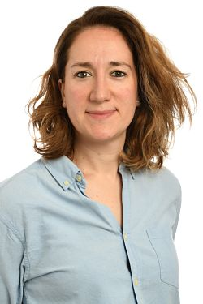
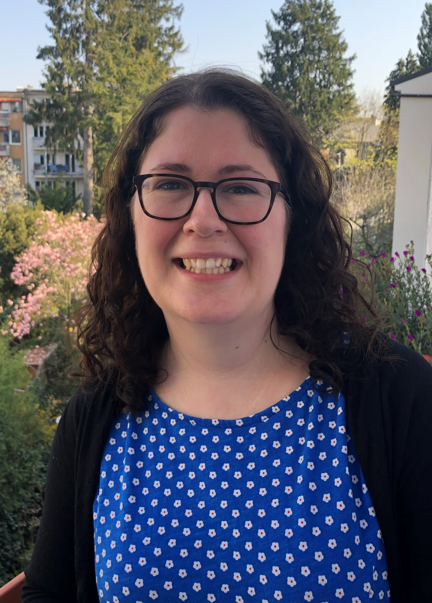

Current Officers
Section Chair: Rodney Sparapani (2021-2022)
I am an applied Bayesian working mainly in biostatistics. Currently,
I hold an Associate Professorship in Biostatistics at the Institute
for Health and Equity of the Medical College of Wisconsin. Virtually,
my entire 30 year career has been dedicated to biostatistics. Eight
of these years were spent in the pharmaceutical industry: almost two
years in manufacturing and the rest in clinical trials for hepatitis,
cardiovascular disease and depression.
My research applies Bayesian methodology to modern biostatistical
problems such as survival analysis, precision medicine, health
services research, clinical/cross-over trials, causal inference,
comparative effectiveness research and big data/omics. For the last
ten years, I have focused on Bayesian machine learning, Bayesian
nonparametrics and the surrounding challenges of routine efficient
computation with user-friendly software such as the
BART3 R package
which I co-authored. My collaborative research has involved the
analysis of cancer treatments, cardiovascular disease and a wide
variety of other conditions such as diabetes, osteoporosis, hip
fracture and various forms of surgery.
As Chair of this section, I will work to further
connections between biostatistical and pharmaceutical professionals
including planning annual, or biennial, meetings to promote the
application of Bayesian methods in these areas of study.
Program Chair: Anna Frenni Sterrantino (2021-2022)
I am a Researcher Associate in Statistics for Environmental Epidemiology at the UK Small Area Health Statistics Unit (SAHSU), part of the MRC-PHE Centre for Environment and Health at Imperial College London. My research focuses on two themes: 1) Applied statistical methods in environmental epidemiological studies; and 2) developing methods for data with spatial and temporal structure. I am interested in Bayesian approaches and Latent Gaussian Markov Random Fields and on the related computational aspects and to methods to improve small area analysis. Besides that, I am involved in extra-academic activities as co-chair of the Researchers’ Society promoting course/seminars and workshops for early career and PhD students.
Secretary: Lisa Hampson (2021-2022)
I am a member of the Advanced Methodology & Data Science group at Novartis based in Basel, Switzerland, where my role is to support the development and implementation of innovative statistical methods (... many of them Bayesian!). Prior to joining the pharmaceutical industry, I was a Lecturer in Statistics at Lancaster University in the United Kingdom, and held a UK Medical Research Council (MRC) Career Development Award in Biostatistics. My current research interests include Bayesian approaches for leveraging existing information in clinical trials, Bayesian methods to support quantitative decision making, and expert elicitation. I am honored to be nominated to run as the Secretary of the “Biostatistics and Pharmaceutical Statistics” section of ISBA, and would be proud to serve the Bayesian community in this way.
Treasurer: Lorin Crawford (2021-2022)
I am an applied Bayesian working mainly in biostatistics. Currently, I am a Senior Researcher at Microsoft Research New England. I also maintain a faculty position in the School of Public Health with an affiliation in the Center for Computational Molecular Biology at Brown University. Prior to joining both MSR and Brown, I received my PhD from the Department of Statistical Science at Duke University as an NSF Graduate Research Fellow. My dissertation, entitled: "Bayesian Kernel Models for Statistical Genetics and Cancer Genomics", was awarded the Savage Award in Applied Methodology. Some of my most recent work post graduate school has landed me a place on Forbes 30 Under 30 list, recognition as a member of The Root 100 Most Influential African Americans in 2019, and the awarding of an Alfred P. Sloan Research Fellowship.
Truly, the biological phenomena captured in high-throughput genomic data motivate me to develop new statistical methodologies. The central aim of my research program is to build probabilistic machine learning algorithms and statistical tools that aid in the understanding of how relationships between genetic features affect the architecture of complex traits and contribute to disease etiology. A consistent theme of my work is to take modern computational approaches and develop theory that enable their interpretations to be related back to classical genomic principles. Some very exciting application areas of mine include human genetics, cancer pharmacology, and biomedical imaging where my goal is understand when 3D shape variation can be used to explain phenotypic variation.
I have been a member of ISBA since the beginning of graduate school in 2013, and I have had the privilege of being invited to present at both the 2016 and 2018 World Meetings in Sardnia, Italy and Edinburgh, Scotland, respectively. Recently, I joined the IBS ENAR regional advisory board where I am consistently challenged to generate new ideas for initiatives to benefit members of the organization, attract new members, and to elicit more active engagement in the general statistics community.
With annual meetings and conferences occurring in a way that is different than the norm, I recognize the need to configure the section budget of the section in a way that maximizes resources for our members. As treasurer of this section, I will work to provide innovative ways to strengthen the connection between biostatistical and pharmaceutical professionals, as well as work to increase the interaction with Bayesians in tech.
Past Officers
Section Chair
- Gary Rosner (2019-2020)
- Leonard Held (2016-2018)
- Sylvia Richardson (2015-2016)
Program Chair
- Tony Pourmohamad (2019-2020)
- Gianluca Baio (2017-2018)
- Telba Z. Irony (2015-2016)
Secretary
- Manuela Zucknick (2017-2020)
- Gianluca Baio (2015-2016)
Treasurer
- Anna Frenni Sterrantino (2017-2020)
- Ying Yang (2015-2016)
- © ISBA Section on Biostatistics and Pharmaceutical Statistics